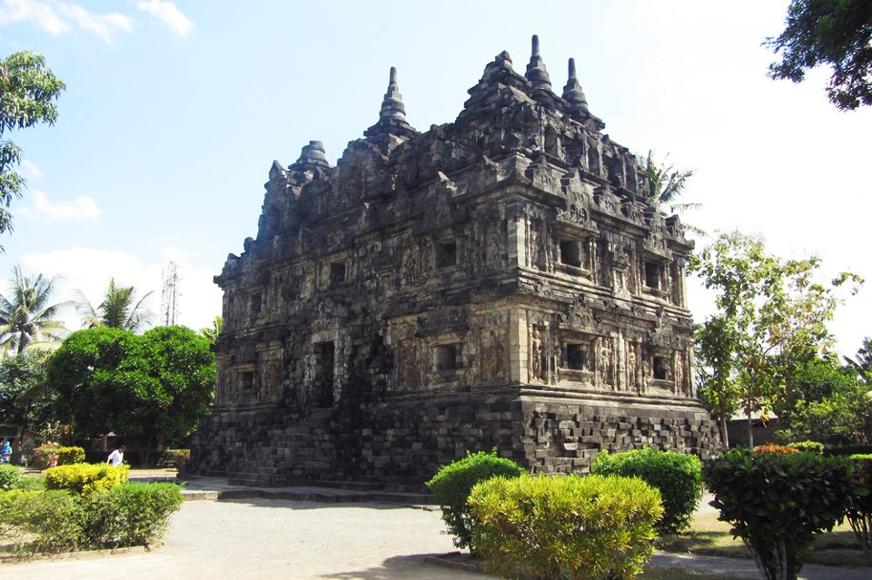

Ke Candi Tanpa Keluar Rumah ? BISA !!
Apakah kamu mahasiswa pendidikan sejarah ? ( •_•) Sedang butuh pergi ke situs sejarah hindu-buddha untuk penelitian ? ┐(´д`)┌ sedang mengerjakan tugas hypermedia membuat ( ͡° ͜ʖ ͡° ) Virtual Tour?
Atau kamu itu orang yang males banget keluar rumah ?(⋟﹏⋞) tapi sekalinya keluar rumah males pulang ?
kamu benar mengunjungi situs kami ! 凸(｀0´)凸

Lihatlah pada gambar ini ♥( ˆ⌣ ˆԅ) begitu indah dan megah bukan ?
TAPI BENTAR! ಠ_ರೃ Perhatikan Baik-baik !
Begitu cerahnya, dan jika cerah maka banyak cahaya matahari, dan jika banyak cahaya matari berarti panas, benar ?(￣ ￣|||)
┬─┬ノ(ಠ_ಠノ) Waktunya kita....
MEREVOLUSI TEKNOLOGI EDUKASI DAN PARIWISATA !!!! (╯°□°)╯( ┻━┻
Pada wewbsite ini, kalian bisa dengan mudah mencari informasi bahkan berkunjung secara virtual ke situs sejarah candi sari lho !
"Lho beneran kak ? kok bisa (⚆ᗝ⚆)" Beneran bisa kok, di situs ini kalian bisa dengan mudah mengakses semua mengenai candi sari ٩(◕‿◕｡)۶